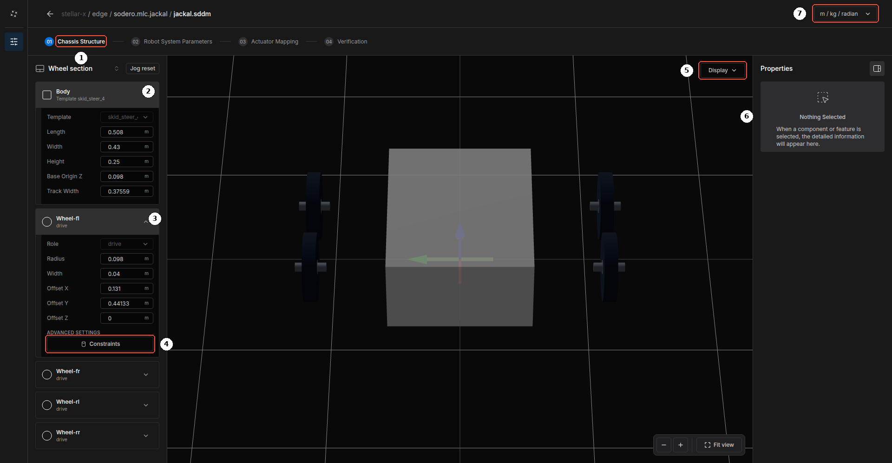
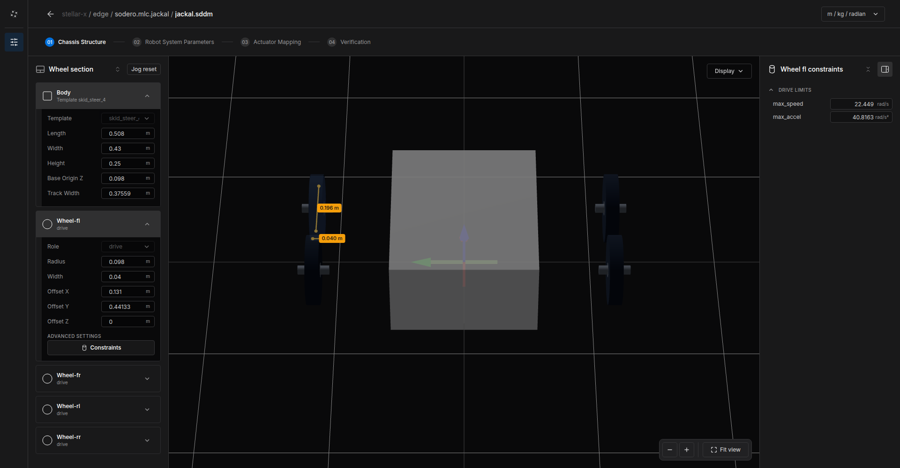
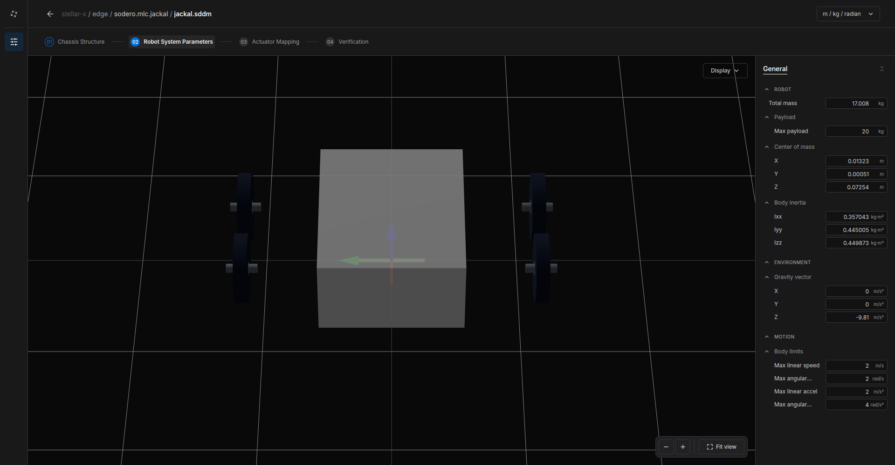
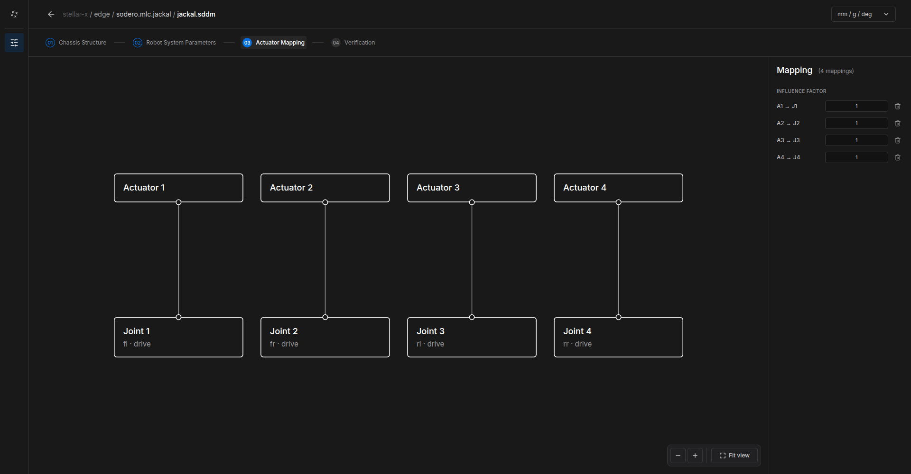
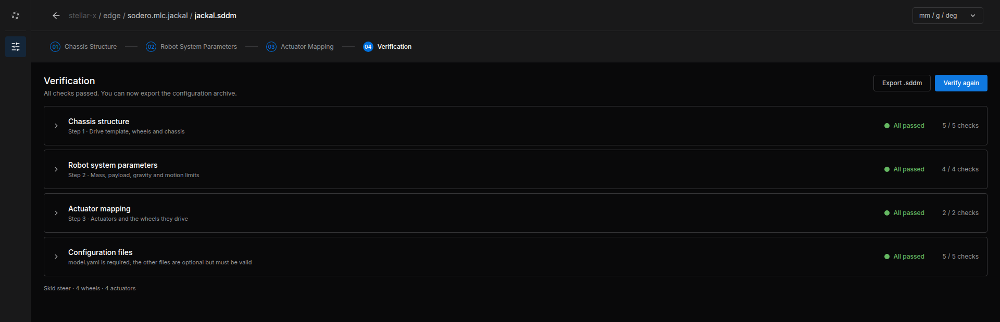

Mobile Robot (.sddm)¶
This tutorial builds the document of a wheeled mobile base, using the Clearpath Jackal (skid steer, four wheels) of the Quick Start. The document belongs to a Strider node (sodero.mlc.NAME).
Before You Start¶
- On the Station, add a Controller › Strider node, for example
jackal, and an Actuator gateway for its wheel motors (Nodes and Connections). - Select the Strider node and click Edit Stellar Designer.
- In Create robot definition, choose the template that matches your drive:
| Template | Drive |
|---|---|
| Differential drive 2WD | Two driven wheels and casters |
| MiR250 differential | Differential drive of a MiR250 |
| Skid steer 4WD | Four fixed driven wheels that slide when turning |
| Mecanum 4WD | Four mecanum wheels, omnidirectional |
| Swerve 4WD | Four steered and driven wheels |
| Ackermann | Car-like steering |
The template sets the drive type, which decides how body velocities become wheel commands. Then change its dimensions to those of your robot.
Step 1: Chassis Structure¶


Step 01 Chassis Structure ① shows the body and the wheels of the base.
Body ②:
| Field | Meaning |
|---|---|
| Template | The drive type |
| Length, Width, Height | Outer dimensions of the body |
| Base Origin Z | Height of the robot's base frame above the floor (normally the wheel radius) |
| Track Width | Distance between the left and right wheels of a differential drive |
Wheels ③ (Wheel-fl, Wheel-fr, Wheel-rl, Wheel-rr):
| Field | Meaning |
|---|---|
| Role | drive (driven), steer (steered), drive + steering, or caster (passive) |
| Radius, Width | Wheel size |
| Offset X, Offset Y, Offset Z | Wheel position relative to the base frame (X forward, Y left) |
Constraints ④ opens the wheel's drive limits in the right panel ⑥: max_speed and max_accel of the wheel.


Display ⑤ changes the 3D view; the unit menu ⑦ changes the display units.
Skid-steer wheels slide sideways when the robot turns, so the robot turns less than the wheel speeds suggest. The skid-steer kinematics use the wheels' Offset Y: turn the robot in place by a known angle and increase the left and right Offset Y until the odometry matches the real turn. The simulated Jackal of the Quick Start, for example, uses an effective Offset Y of 0.441 m.
Step 2: Robot System Parameters¶


| Group | Fields | Meaning |
|---|---|---|
| ROBOT | Total mass, Max payload, Center of mass, Body inertia | Mass properties of the robot |
| ENVIRONMENT | Gravity vector | Normally (0, 0, -9.81) m/s² |
| MOTION | Max linear speed, Max angular speed, Max linear accel, Max angular accel | Limits of the body velocity. Strider and the Navigator never exceed them. |
Step 3: Actuator Mapping¶


Connect each actuator of the gateway to the wheel it drives (or steers), as for a manipulator (Manipulator › Actuator Mapping). The order must match the gateway: in the Jackal's gateway, actuator 1 is the front-left wheel, 2 front-right, 3 rear-left, 4 rear-right.
A mobile base uses the mapping only to know which actuator drives which wheel; leave the INFLUENCE FACTOR at 1. The wheel kinematics already account for the left and right side. If a real wheel still turns the wrong way, invert the motor's direction in its drive, for example by writing the drive's polarity parameter as a start-up SDO (EtherCAT Gateway).
Step 4: Verification¶
Click Verify. Stellar Designer checks the chassis structure, the system parameters, the actuator mapping and the configuration files.


Export .sddm saves a copy of the document to your computer.
Try the Robot¶
Start the gateway and the Strider node, open Strider, choose Twist, switch the servo on and drive slowly (Strider). Check that:
- Forward drives forward and every wheel turns the right way,
- Turn Left turns counterclockwise (seen from above),
- the odometry on the Status page matches the distance and angle actually driven.